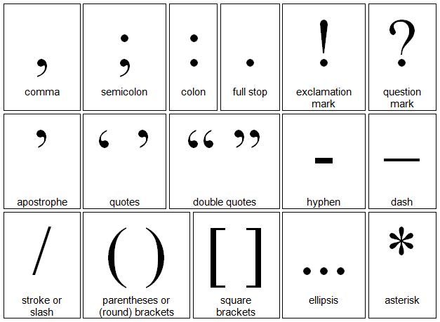

Basic Writing: Middle School
Puntuation Signs
Punctuation is the system of signs or symbols given to a reader to show how a sentence is constructed and how it should be read.
Sentences are the building blocks used to construct written accounts. They are complete statements. Punctuation shows how the sentence should be read and makes the meaning clear.
Every sentence should include at least a capital letter at the start, and a full stop, exclamation mark or question mark at the end. This basic system indicates that the sentence is complete.
The Basic Signs of Punctuation are:
- The comma ","
- The full stop "."
- The exclamation mark "!"
- The question mark "?"
- The semi-colon ";"
- The colon ":"
- The Apostrophe "'"
- The hyphen"-"
- pause before proceeding
- add a phrase that does not contain any new subject
- separate items on a list
- use more than one adjective (a describing word, like beautiful)
- "Stop! Police!"
- "Ha! Ha! Ha!"
- To mark out speech
- When quoting someone else's speech
- Sub-part
- Eighteenth-century people
- Week-end
- Second-class post
- Gender-neutral
- Non-verbal
The Basic Signs of Puntuations
The Comma(,)
The comma is useful in a sentence when the writer wishes to:
For example, in the following sentence the phrase or clause between the commas gives us more information behind the actions of the boy, the subject of the sentence:
The boy, who knew that his mother was about to arrive, ran quickly towards the opening door.
Full Stop(.)
A full stop should always be used to end a sentence. The full stop indicates that a point has been made and that you are about to move on to further explanations or a related point.
Less frequently, a series of three full stops (an ellipsis) can be used to indicate where a section of a quotation has been omitted when it is not relevant to the text, for example:
“The boy was happy… at the start of his summer holiday.”
Exclamation Mark(!)
An exclamation mark indicates strong feeling within a sentence, such as fear, anger or love. It is also used to accentuate feeling within the written spoken word.
For Example:
"Help! I love you!"
In this way, it can also be used to indicate a sharp instruction
or to indicate humour
The exclamation mark at the end of a sentence means that you do not need a full stop.
Exclamation marks are a poor way of emphasising what you think are important points in your written assignments; the importance of the point will emphasise itself without a sequence of !!! in the text. An exclamation mark should only be used when absolutely essential, or when taken from a direct quote.
The exclamation mark should be used sparingly in formal and semi-formal writing.
Question Mark(?)
The question mark simply indicates that a sentence is asking a question. It always comes at the end of a sentence:
For example:
Are we at the end?
Semi-colon(;)
The semi-colon is perhaps the most difficult sign of punctuation to use accurately. If in doubt, avoid using it and convert the added material into a new sentence.
As a general rule, the semi-colon is used in the following ways:
When joining two connected sentences.
For example:
We set out at dawn; the weather looked promising.
or
Assertive behaviour concerns being able to express feelings, wants and desires appropriately; passive behaviour means complying with the wishes of others
Colon(;)
The colon within a sentence makes a very pointed pause between two phrases. There are two main uses of the colon:
It is most commonly used when listing.
For example:
She placed the following items into the trolley: beer, fruit, vegetables, toilet rolls, cereals and cartons of milk.
Quotation Marks("...")
Quotation or speech marks are used to:
For example:
My grandpa said, "Share your chocolates with your friends."
"George, don't do that!"
"Will you get your books out please?” said Mrs Jones, the teacher, “and quieten down!"
Hyphen(-)
The hyphen is used to link words together.
For Example:
Education is what survives when what has been learned has been forgotten.